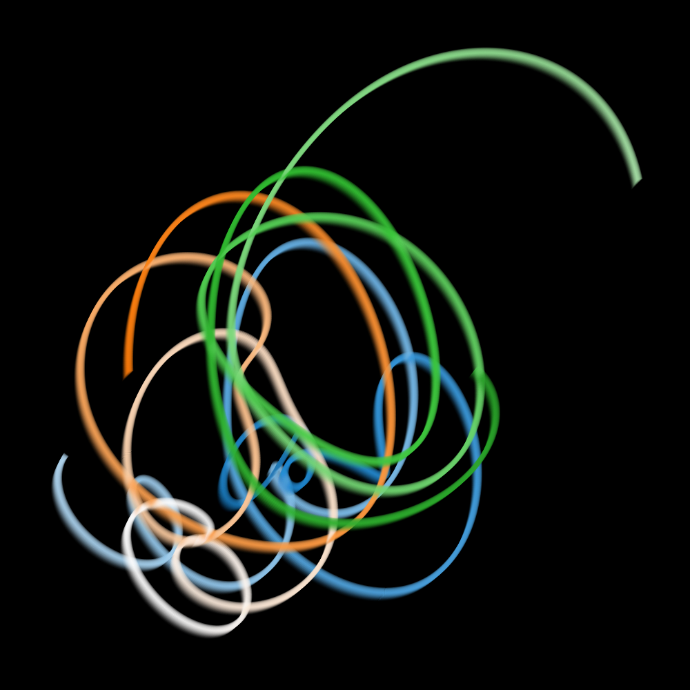
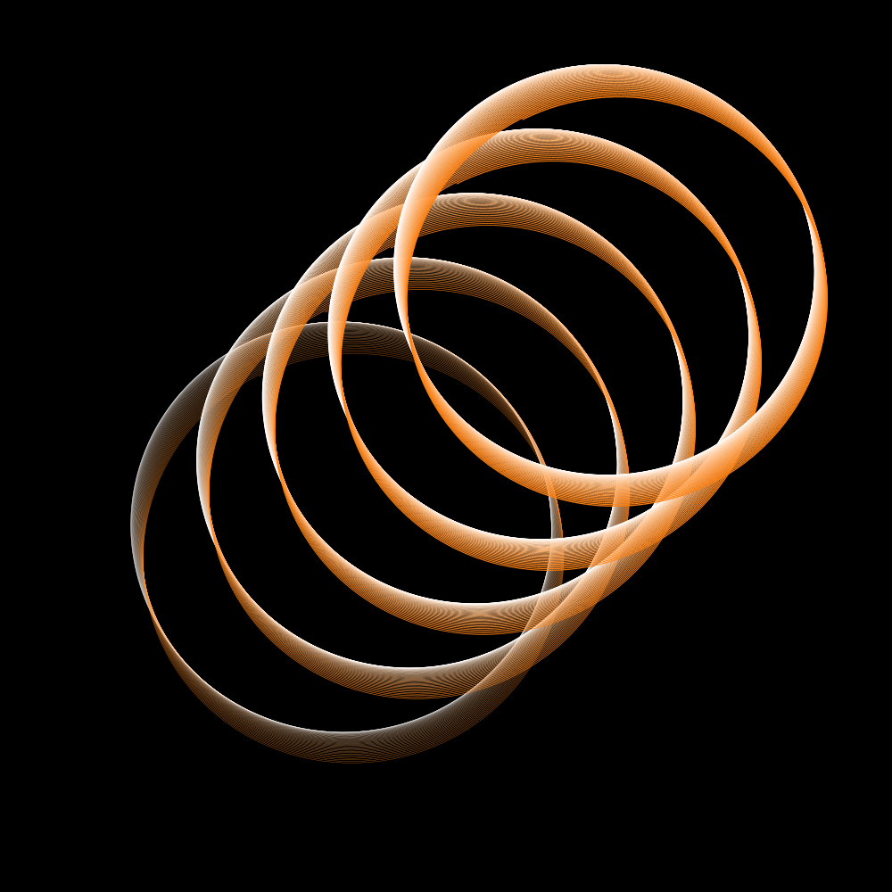

Generative art experiments#
Danielle Navarro delivered an exceptionally captivating presentation on their generative art as part of the 2023 Ihaka lecture series. I’ve been enthusiastic about integrating procedural generation into my games, as I find the concept of harnessing randomness to craft something extraordinary truly fascinating. Generative art provides a remarkable avenue for delving into this very concept. Here, I’d like to share a few of the experiments I ventured into following Danielle’s enlightening talk.
1. Random walk#
Show code cell source
# import matplotlib.pyplot as plt
import numpy as np
%matplotlib inline
import matplotlib.pyplot as plt
import os
def hide_axes(ax):
for spine in ax.spines.values():
spine.set_visible(False)
ax.xaxis.set_ticks_position('none')
ax.yaxis.set_ticks_position('none')
ax.set_xticklabels([])
ax.set_yticklabels([])
OUTDIR = "random_walk"
os.makedirs(OUTDIR, exist_ok=True)
def next_step():
direction = np.random.uniform(-1, 1, size=1)
distance = np.random.normal(0, 5, size=1)
return direction * distance
def generate_random_walk(n_steps, n_smooth):
pts = np.zeros((2, n_steps))
for i in range(1, n_steps):
pts[0, i] = pts[0, i-1] + next_step()
pts[1, i] = pts[1, i-1] + next_step()
# smooth xy coordinates
pts[0, :] = np.convolve(pts[0, :], np.ones(n_smooth)/n_smooth, mode='same')
pts[1, :] = np.convolve(pts[1, :], np.ones(n_smooth)/n_smooth, mode='same')
return pts
def plot_walk(n_steps, n_walkers, seed, colormap=plt.cm.Blues_r, alpha=0.5):
n_smooth = int(n_steps * 0.05)
np.random.seed(seed)
fig = plt.figure(figsize=(5,5), facecolor=(0, 0, 0))
for i in range(n_walkers):
pts = generate_random_walk(n_steps, n_smooth)[:, 0:n_steps-n_smooth]
point_numbers = list(range(len(pts[0])))
plt.scatter(pts[0, :], pts[1, :], c=point_numbers, cmap=colormap, edgecolors='none', s=1, alpha=alpha)
plt.gca().set_facecolor('black')
plt.axis('off')
return fig
# fig = plot_walk(n_steps=5000, n_walkers=10, seed=0)
# fig.savefig(f"{OUTDIR}/1.png")
# fig = plot_walk(n_steps=5000, n_walkers=100, seed=1, colormap=plt.cm.Reds_r, alpha=0.05)
# fig.savefig(f"{OUTDIR}/2.png")
# fig = plot_walk(n_steps=100000, n_walkers=20, seed=2, colormap='winter', alpha=0.5)
# fig.savefig(f"{OUTDIR}/3.png")
2. N-body#
a) All bodies are the same mass#
Show code cell source
# Some utils
import matplotlib.pyplot as plt
# import imageio
import os
import glob
import re
from datetime import datetime
import numpy as np
from tqdm.auto import trange, tqdm
import warnings
from matplotlib import rcParams
import colorsys
from matplotlib.colors import ColorConverter, LinearSegmentedColormap
rcParams.update({"xtick.major.pad": "7.0"})
rcParams.update({"xtick.major.size": "7.5"})
rcParams.update({"xtick.major.width": "1.5"})
rcParams.update({"xtick.minor.pad": "7.0"})
rcParams.update({"xtick.minor.size": "3.5"})
rcParams.update({"xtick.minor.width": "1.0"})
rcParams.update({"ytick.major.pad": "7.0"})
rcParams.update({"ytick.major.size": "7.5"})
rcParams.update({"ytick.major.width": "1.5"})
rcParams.update({"ytick.minor.pad": "7.0"})
rcParams.update({"ytick.minor.size": "3.5"})
rcParams.update({"ytick.minor.width": "1.0"})
rcParams.update({"font.size": 20})
rcParams.update({"xtick.top": True})
rcParams.update({"ytick.right": True})
rcParams.update({"xtick.direction": "in"})
rcParams.update({"ytick.direction": "in"})
OUTDIR = 'orbit_out'
os.makedirs(OUTDIR, exist_ok=True)
def collect_runtimes(func, n_vals, n_trials=2, kwargs={}) -> np.ndarray:
"""
Collect runtimes for a function with different input sizes
Parameters
----------
func : function
Function to run
n_vals : list
List of input sizes
n_trials : int, optional
Number of trials to run, by default 2
kwargs : dict, optional
Keyword arguments to pass to func, by default {}
Returns
-------
np.ndarray
Array of runtimes with shape (len(n_vals), n_trials)
"""
warnings.filterwarnings("error")
runtimes = np.zeros((len(n_vals), n_trials))
for npart_i in trange(len(n_vals), desc="Collecting runtimes"):
for trial_i in range(n_trials):
start = datetime.now()
n = n_vals[npart_i]
try:
func(N=n, **kwargs)
runtimes[npart_i, trial_i] = get_runtime(start)
except RuntimeWarning:
runtimes[npart_i, trial_i] = np.nan
return runtimes
def get_runtime(start: datetime):
return (datetime.now() - start).total_seconds()
def make_gif(im_regex, outname, duration=0.1):
imgs = glob.glob(im_regex)
imgs = sorted(imgs, key=lambda x: int(re.findall(r"\d+", x)[0]))
frames = [imageio.imread_v2(f) for f in imgs]
imageio.mimsave(outname, frames, duration=duration)
for f in imgs:
os.remove(f)
def remove_spines(ax):
"""Remove all spines and ticks from an axis"""
for spine in ax.spines.values():
spine.set_visible(False)
ax.set_yticks([])
ax.set_xticks([])
def scale_color_brightness(color, scale_l=1.0):
rgb = ColorConverter.to_rgb(color)
# convert rgb to hls
h, l, s = colorsys.rgb_to_hls(*rgb)
# manipulate h, l, s values and return as rgb
return colorsys.hls_to_rgb(h, min(1, l * scale_l), s=s)
def make_colormap(color):
rgb = [
(i, scale_color_brightness(color, scale_l=i + 1)) for i in np.linspace(0, 1, 30)
]
cmap = LinearSegmentedColormap.from_list(f"custom_{color}", colors=rgb, N=256)
cmap = cmap.reversed()
return cmap
from datetime import datetime
from tqdm.auto import trange
from typing import List, Union
import numpy as np
import matplotlib.pyplot as plt
import os
import random
G = 1.0 # Gravitational Constant
OUTDIR = 'orbit_out/'
def plot_particles(positions: Union[List, np.ndarray], n_time_total: int = 0, color='tab:blue'):
"""Plot the positions of particles in 2D
Parameters
----------
positions : Union[List, np.ndarray]
List of positions of particles. Should be of shape (n_particles, {xyz}, n_time).
n_time_total : int, optional
Total number of time steps (used for plotting the trail), by default 0
color : str, optional
Color of the particles, by default 'tab:blue'
"""
n_part, _, n_time = positions.shape
if n_time_total == 0:
n_time_total = n_time
fig = plt.figure(figsize=(4, 4), dpi=80)
ax = fig.gca()
# plot the particle orbits
idx_end = np.argmax(np.where(np.sum(positions, axis=(0, 1)) != 0)[0])
idx_start = np.max([int(idx_end - 0.1 * n_time_total), 0])
nidx = idx_end - idx_start
max_size = 10
ax.scatter(
positions[:, 0, idx_end], positions[:, 1, idx_end],
s=max_size, color=color, ec='k', lw=0.5
)
# plot the trail
if nidx > 1:
ms = np.geomspace(1e-4, max_size, nidx)
# set ms < 0.05 to 0
mask = ms < 0.05
ms[mask] = 0
# colors = np.array([make_colormap('tab:blue', 'white')(i) for i in np.linspace(0, 1, nidx)])
ax.scatter(
positions[:, 0, idx_start:idx_end], positions[:, 1, idx_start:idx_end],
s=[ms] * n_part, zorder=-10,
c=[ms] * n_part,
cmap=make_colormap(color),
)
ax.set_xlim(-2, 2)
ax.set_ylim(-2, 2)
ax = plt.gca()
remove_spines(ax)
ax.set_aspect('equal', 'box')
# remove white border around figure
fig.tight_layout(pad=0)
return fig
def plot_particle_gif(pos, outdir, dur):
os.makedirs(outdir, exist_ok=True)
n_part, _, n_time = pos.shape
for i in trange(10, n_time, 10, desc='Making gif'):
fig = plot_particles(pos[:, :, 0:i], n_time_total=n_time, color='tab:blue')
# add textbox in top left corner
ax = plt.gca()
ax.text(
0.05, 0.95,
f't={i:003d}', transform=ax.transAxes,
fontsize=14, verticalalignment='top',
fontstyle='italic',
alpha=0.5,
)
fig.savefig(f'{outdir}/orbit_{i:003d}.png')
plt.close(fig)
make_gif(f'{outdir}/orbit_*.png', f'{outdir}/orbit.gif', duration=dur)
print(f'Gif saved to {outdir}/orbit.gif')
def newtonian_acceleration_np(pos, mass, G, softening):
# positions r = [x,y,z] for all particles
x = pos[:, 0:1]
y = pos[:, 1:2]
z = pos[:, 2:3]
# matrix that stores all pairwise particle separations: r_j - r_i
dx = x.T - x
dy = y.T - y
dz = z.T - z
# matrix that stores 1/r^3 for all particle pairwise particle separations
inv_r3 = (dx ** 2 + dy ** 2 + dz ** 2 + softening ** 2)
inv_r3[inv_r3 > 0] = inv_r3[inv_r3 > 0] ** (-1.5)
# pack together the acceleration components
return G * np.hstack((
np.matmul(dx * inv_r3, mass),
np.matmul(dy * inv_r3, mass),
np.matmul(dz * inv_r3, mass)
))
def nbody_runner_np(
N: int = 5,
tEnd: float = 10.0,
dt: float = 0.01,
softening: float = 0.1,
random_seed: int = 17,
max_runtime: int = 5,
verbose: bool = True,
):
""" N-body simulation """
# Initialisation
np.random.seed(random_seed)
mass = 20.0 * np.ones((N, 1)) / N # total mass of particles is 20
pos = np.random.randn(N, 3) # randomly selected positions and velocities
vel = np.random.randn(N, 3)
t = 0
Nt = int(np.ceil(tEnd / dt))
runtime_start = datetime.now()
vel -= np.mean(mass * vel, 0) / np.mean(mass)
acc = newtonian_acceleration_np(pos, mass, G, softening)
pos_save = np.zeros((N, 3, Nt + 1))
pos_save[:, :, 0] = pos
# Simulation loop
for i in trange(Nt, desc="Running simulation", disable=not verbose):
vel += acc * dt / 2.0
pos += vel * dt
acc = newtonian_acceleration_np(pos, mass, G, softening)
vel += acc * dt / 2.0
t += dt
pos_save[:, :, i + 1] = pos
runtime = get_runtime(runtime_start)
if runtime > max_runtime:
warnings.warn(f"Runtime exceeded {max_runtime} seconds. Stopping simulation.")
break
return pos_save
import matplotlib.collections as mcoll
def colorline(
x, y, z=None, cmap=plt.get_cmap('copper'), norm=plt.Normalize(0.0, 1.0),
linewidth=3, alpha=1.0):
# Default colors equally spaced on [0,1]:
if z is None:
z = np.linspace(0.0, 1.0, len(x))
# Special case if a single number:
if not hasattr(z, "__iter__"): # to check for numerical input -- this is a hack
z = np.array([z])
z = np.asarray(z)
segments = make_segments(x, y)
lc = mcoll.LineCollection(segments, array=z, cmap=cmap, norm=norm,
linewidth=linewidth, alpha=alpha)
ax = plt.gca()
ax.add_collection(lc)
return lc
def make_segments(x, y):
points = np.array([x, y]).T.reshape(-1, 1, 2)
segments = np.concatenate([points[:-1], points[1:]], axis=1)
return segments
def plot_simple_orbits(seed, N=2, tEnd=3, dt=0.001, spacing=0.001, nlin=30):
fig = plt.figure(figsize=(10,10), facecolor='black')
positions = nbody_runner_np(N=N, random_seed=seed, tEnd=tEnd, verbose=False, dt=dt)
max_lim_x, min_lim_x = np.max(positions[:, 0, :]), np.min(positions[:, 0, :])
max_lim_y, min_lim_y = np.max(positions[:, 1, :]), np.min(positions[:, 1, :])
pts = np.linspace(0, 1, positions.shape[2])
plt.xlim(min_lim_x, max_lim_x)
plt.ylim(min_lim_y, max_lim_y)
for i, plnts in enumerate(positions):
# decrease alpha over time
# alpha = np.linspace(0.1, 1, len(i))
# color between white and blue
colorbar = make_colormap(f'C{i}')
# colorline(plnts[0][1:-1], plnts[1][1:-1], pts, cmap=colorbar, linewidth=2)
for _ in reversed(range(nlin)):
colorline(plnts[0][1:-1]+spacing*_, plnts[1][1:-1]+spacing*_, pts, cmap=colorbar, linewidth=2*0.1*_, alpha=0.01*_)
# turn off axis
# plt.suptitle(seed, color='white')
plt.xlim(min_lim_x, max_lim_x)
plt.ylim(min_lim_y, max_lim_y)
plt.axis('off')
# get max x
# get max y
# recompute the ax.dataLim
plt.axis('auto')
plt.box(False)
plt.gca().set_facecolor('black')
plt.tight_layout()
return fig
#
# plot_simple_orbits(91)
# plot_particle_gif(positions, outdir=f'orbits.gif', dur=3)
# for i in range(10):
# fig = plot_simple_orbits(i,spacing=0.005, nlin=50)
# fig.savefig(f"{OUTDIR}/2body_{i:002d}.png" )
# plt.close(fig)
# for i in range(200,250):
# fig = plot_simple_orbits(i, N=3,spacing=0.005)
# fig.savefig(f"{OUTDIR}/3body_{i:002d}.png")
# plt.close(fig)
 |
|
b) One central ‘black hole’#
Show code cell source
MIN_V, MAX_V = 3,7
## 2 Body newtonian gravity, 1 body fixed in the center
def twobody_runner_np(
N: int = 5,
tEnd: float = 10.0,
dt: float = 0.01,
softening: float = 0.1,
random_seed: int = 17,
max_runtime: int = 5,
verbose: bool = True,
):
""" N-body simulation """
# Initialisation
np.random.seed(random_seed)
# First body (mass = 100, velocity = [0, 0, 0], position = [0, 0, 0])
mass = np.array([np.concatenate((np.array([100.0]), 0.1 * np.ones(N - 1)))]).T # First body has 100 times the mass
pos = np.zeros((N, 3)) # All positions along the Z axis are 0
vel = np.zeros((N, 3)) # All velocities along the Z axis are 0
t = 0
Nt = int(np.ceil(tEnd / dt))
runtime_start = datetime.now()
# Calculate tangential velocity for other bodies
angular_velocity = np.sqrt(G * mass[0] / 10) # Tangential velocity formula
for i in range(1, N):
R = np.random.uniform(1.5,3)
theta = np.random.uniform(0, 2*np.pi)
pos[i, 0] = np.sin(theta) * R
pos[i, 1] = np.cos(theta) * R
theta = np.arctan2(pos[i, 1], pos[i, 0]) # Angle relative to x-axis
# print(theta)
vel_magnitude = np.random.uniform(MIN_V, MAX_V) # Tangential velocity magnitude
vel[i, 0] = -vel_magnitude * np.sin(theta) # Tangential velocity components
vel[i, 1] = vel_magnitude * np.cos(theta)
acc = newtonian_acceleration_np(pos, mass, G, softening)
pos_save = np.zeros((N, 3, Nt + 1))
pos_save[:, :, 0] = pos
# Simulation loop
for i in trange(Nt, desc="Running simulation", disable=not verbose):
vel += acc * dt / 2.0
pos += vel * dt
acc = newtonian_acceleration_np(pos, mass, G, softening)
vel += acc * dt / 2.0
t += dt
pos_save[:, :, i + 1] = pos
runtime = get_runtime(runtime_start)
if runtime > max_runtime:
warnings.warn(f"Runtime exceeded {max_runtime} seconds. Stopping simulation.")
break
for j in range(1, N):
if np.linalg.norm(pos[j]) > 0. :
pos[j] = np.array([np.nan, np.nan, np.nan])
return pos_save
def plot_2body_orbits(seed, N=2, tEnd=3, dt=0.001, spacing=0.001, nlin=30, alpha_rev=False):
fig = plt.figure(figsize=(10,10), facecolor='black')
positions = twobody_runner_np(N=N, random_seed=seed, tEnd=tEnd, verbose=False, dt=dt)
max_lim_x, min_lim_x = np.max(positions[:, 0, :]), np.min(positions[:, 0, :])
max_lim_y, min_lim_y = np.max(positions[:, 1, :]), np.min(positions[:, 1, :])
pts = np.linspace(0, 1, positions.shape[2])
plt.xlim(min_lim_x, max_lim_x)
plt.ylim(min_lim_y, max_lim_y)
for i, plnts in enumerate(positions):
if i ==0 :
continue
# decrease alpha over time
# alpha = np.linspace(0.1, 1, len(i))
# color between white and blue
colorbar = make_colormap(f'C{i}')
# colorline(plnts[0][1:-1], plnts[1][1:-1], pts, cmap=colorbar, linewidth=2)
for _ in range(nlin):
a = 0.01*_
if alpha_rev:
a = 1 - a
colorline(plnts[0][1:-1]+spacing*_, plnts[1][1:-1]+spacing*_, pts, cmap=colorbar, linewidth=2*0.1*_, alpha=a)
# turn off axis
# plt.suptitle(seed, color='white')
plt.xlim(min_lim_x, max_lim_x)
plt.ylim(min_lim_y, max_lim_y)
plt.axis('off')
# get max x
# get max y
# recompute the ax.dataLim
plt.axis('auto')
plt.box(False)
plt.gca().set_facecolor('black')
plt.tight_layout()
return fig
# OUTDIR = 'black_hole'
# os.makedirs(OUTDIR, exist_ok=True)
# fig = plot_2body_orbits(1, N=2, tEnd=15, spacing=0.01)
# fig.savefig(f"{OUTDIR}/1.png")
# MIN_V, MAX_V = 6,10
# fig = plot_2body_orbits(5, N=2, tEnd=50, spacing=0.5, dt=0.01, nlin=6, alpha_rev=True)
# fig.savefig(f"{OUTDIR}/2.png")
# fig = plot_2body_orbits(21, N=2, tEnd=50, spacing=0.1, dt=0.1, nlin=6, alpha_rev=True)
# fig.savefig(f"{OUTDIR}/3.png")
 |
|

3. Math functions#
Show code cell source
! pip install samila==1.1 -q
import matplotlib.pyplot as plt
import random
from samila import GenerativeImage, Projection, Marker
from samila import Projection
# import numpy as np
# import matplotlib.pyplot as plt
# # Create a grid of x and y values
# x = np.linspace(-2, 2, 400)
# y = np.linspace(-2, 2, 400)
# X, Y = np.meshgrid(x, y)
# # Calculate the function values for each point on the grid
# result = np.random.uniform(-1, 1, size=X.shape) * X**2 - np.sin(Y**2) + np.abs(Y - X)
# # Create a contour plot
# plt.contourf(X, Y, result, levels=20, cmap='viridis')
# plt.colorbar()
# # Add labels and a title
# plt.xlabel('x')
# plt.ylabel('y')
# plt.title('Contour Plot of the Function')
# # Show the plot
# plt.show()
OUTDIR = '3d_fx'
os.makedirs(OUTDIR, exist_ok=True)
np.random.seed(0)
def f1(x, y):
result = random.uniform(-1,1) * x**2 - np.sin(y**2) + np.abs(y-x)
return result
def f2(x, y):
result = random.uniform(-0.5,0.5) * y**3 - np.cos(x**2) + np.sqrt(2*x)
return result
def f3(x, y):
result = random.uniform(-1,1) * x*y + np.tan(x*y)
return result
def f4(x,y, b=.1, a=0.3,c=0.3,d=.4):
return (np.sqrt((np.sqrt((x*np.sin(b) + a*np.cos(b))**2))))
g2 = GenerativeImage(f2, f1)
g2.generate(seed=5)
# g2.plot(cmap="winter", color="darkorange", alpha=0.5, bgcolor="black",)
# plt.savefig(f"{OUTDIR}/1.png")
g2.plot(cmap="winter", color="darkorange", projection=Projection.POLAR, marker=Marker.CIRCLE,alpha=1,bgcolor="black")
plt.savefig(f"{OUTDIR}/2_highres.png", dpi=300)
# g2 = GenerativeImage(f4, f1)
# g2.generate(seed=5)
# g2.plot(cmap="winter", color="darkorange", alpha=0.5, bgcolor="black",)
# plt.savefig(f"{OUTDIR}/3.png")
DEPRECATION: devscripts 2.20.2ubuntu2 has a non-standard version number. pip 24.0 will enforce this behaviour change. A possible replacement is to upgrade to a newer version of devscripts or contact the author to suggest that they release a version with a conforming version number. Discussion can be found at https://github.com/pypa/pip/issues/12063
/tmp/ipykernel_182490/1897044965.py:44: RuntimeWarning: invalid value encountered in sqrt
result = random.uniform(-0.5,0.5) * y**3 - np.cos(x**2) + np.sqrt(2*x)
Update Oct 25, 2023
The middle panel image won a small generate art contest fur the Ihaka lecture series!